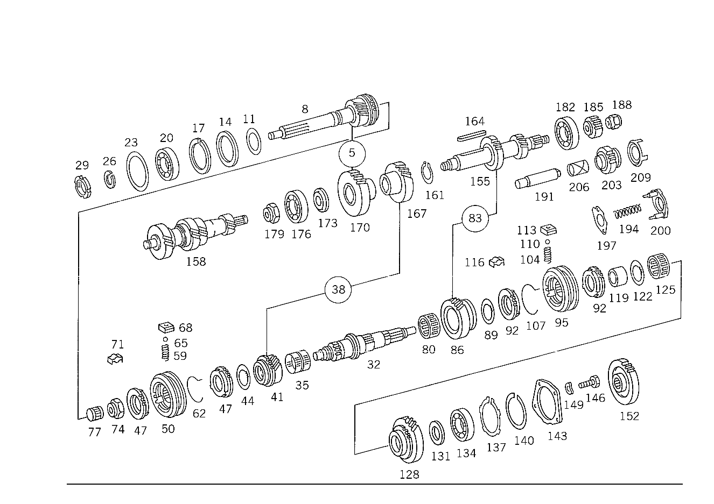

| № | Артикул | Название | Кол. | Примечание | Ограничение |
|---|---|---|---|---|---|
| 5 | A 115 260 06 08 | - Блок шестерен | 1 | ЧЕТВЁРТАЯ ПЕРЕДАЧА ( RADSATZ ) [105] UP TO TRANSMISSION 005 649632 006 107604 | |
| 11 | A 186 262 00 66 | - Маслозащитное кольцо | 1 | ||
| 14 | A 186 262 04 51 | - Проставочное кольцо | 1 | ||
| 17 | A 136 994 06 35 | - Пруж. стопорное кольцо | 1 | ПО НЕОБХОДИМОСТИ 1.9 MM | |
| 17 | A 136 994 09 35 | - Пруж. стопорное кольцо | 1 | ПО НЕОБХОДИМОСТИ 2.00 MM | |
| 17 | A 115 994 22 35 | - Пруж. стопорное кольцо | 1 | ПО НЕОБХОДИМОСТИ 2.1 MM | |
| 20 | A 002 981 06 25 | - ШАРИКОПОДШИПНИК | 1 | ||
| 20 | A 002 981 07 25 | - Рад. шарикоподшипник | 1 | ||
| 23 | A 136 262 06 52 | - Компенсационная шайба | NB | 0.1 MM | |
| 23 | A 136 262 07 52 | - Компенсационная шайба | NB | 0.2 MM | |
| 23 | A 136 262 08 52 | - Компенсационная шайба | NB | 0.3 MM | |
| 26 | A 123 262 04 94 | - Пруж. стопорное кольцо | 1 | ||
| 32 | A 115 262 15 05 | - Вторичный вал | 1 | ||
| 35 | A 005 981 55 10 | - Игольчатый подшипник | 1 | ||
| 35 | A 003 981 08 10 | - ПОДШИПНИК ИГОЛЬЧАТЫЙ | 1 | ||
| 35 | A 003 981 09 10 | - ПОДШИПНИК ИГОЛЬЧАТЫЙ | 1 | ||
| 35 | A 003 981 03 10 | - ПОДШИПНИК ИГОЛЬЧАТЫЙ | 1 | ||
| 38 | A 115 260 05 08 | - Блок шестерен | 1 | (GEAR SET),3RD SPEED [052] 005:123.003,026 UP TO TRANSMISSION 030000,ALSO INSTALLED ON 034001-100000 [105] UP TO TRANSMISSION 005 649632 006 107604 [061] 005:123.000,020,023,102,103,105,120,123,126,130 FROM TRANSMISSION 149145 ALSO INSTALLED UP TO TRANSMISSION 120523 | |
| 47 | A 115 262 30 34 | - Кольцо синхронизатора | 2 | ||
| 50 | A 115 260 49 45 | - Корпус синхронизатора | 1 | ||
| 50 | A 115 262 18 23 | - Скользящая муфта | - | [402] БОЛЬШЕ НЕ ПОСТАВЛЯЕТСЯ | |
| 50 | A 115 262 28 35 | - СИНХРОНИЗАТОР | - | [402] БОЛЬШЕ НЕ ПОСТАВЛЯЕТСЯ | |
| 62 | A 115 993 16 20 | - Торсионная пружина | 2 | ||
| 71 | A 115 262 10 40 | - Поводок | 3 | [055] UP TO CHASSIS 002:114.007,008,015,017 264834 002:114.011 111424 002:114.023 101227 002:115.015 311189 002:115.110 466569 002:115.115 349151 002:115.000,002,010 UNTIL PRODUCTION STOP UP TO TRANSMISSION 003 166532 006 006127 [056] 005:UP TO TRANSMISSION 042703 EXCEPT FOR 123.003,026 005:UP TO TRANSMISSION FOR 123.003,026 | |
| 71 | A 115 262 11 40 | - Поводок | 3 | [057] FROM TRANSMISSION 001 068611 003 166533 006 006128 100 016438 FROM CHASSIS 002:114.007,008,015,017 264835 002:114.011 111425 002:114.023 101228 002:115.015 311190 002:115.110 466570 002:115.115 349152 [058] 005:FROM TRANSMISSION 042704 EXCEPT FOR 123.003,026 005:FROM TRANSMISSION 030712 FOR 123.003,0206 | |
| 74 | A 115 990 10 51 | - гайка | 1 | ВТОРИЧНЫЙ ВАЛ, СПЕРЕДИ | |
| 77 | A 005 981 54 10 | - Игольчатый подшипник | 1 | ||
| 77 | A 002 981 81 10 | - ПОДШИПНИК ИГОЛЬЧАТЫЙ | 1 | ||
| 80 | A 005 981 56 10 | - Игольчатый подшипник | 1 | ||
| 80 | A 003 981 10 10 | - ПОДШИПНИК ИГОЛЬЧАТЫЙ | - | ||
| 80 | A 005 981 56 10 | - Игольчатый подшипник | 1 | ||
| 80 | A 003 981 11 10 | - ПОДШИПНИК ИГОЛЬЧАТЫЙ | - | ||
| 80 | A 005 981 56 10 | - Игольчатый подшипник | 1 | ||
| 86 | A 115 260 31 44 | - ШЕСТЕРНЯ | 1 | ВТОРАЯ ПЕРЕДАЧА [402] БОЛЬШЕ НЕ ПОСТАВЛЯЕТСЯ [033] UP TO TRANSMISSION 001 057803 | |
| 92 | A 115 262 29 34 | - Кольцо синхронизатора | 2 | ПЕРВАЯ И ВТОРАЯ ПЕРЕДАЧА | |
| 95 | A 115 260 48 45 | - Корпус синхронизатора | 1 | ПЕРВАЯ И ВТОРАЯ ПЕРЕДАЧА | |
| 95 | A 115 262 14 23 | - СКОЛЬЗ. МУФТА СИНХРОНИЗ. | - | [402] БОЛЬШЕ НЕ ПОСТАВЛЯЕТСЯ | |
| 95 | A 115 262 27 35 | - СИНХРОНИЗАТОР | - | [402] БОЛЬШЕ НЕ ПОСТАВЛЯЕТСЯ | |
| 107 | A 115 993 17 20 | - пружина | 2 | ||
| 116 | A 115 262 10 40 | - Поводок | 3 | [055] UP TO CHASSIS 002:114.007,008,015,017 264834 002:114.011 111424 002:114.023 101227 002:115.015 311189 002:115.110 466569 002:115.115 349151 002:115.000,002,010 UNTIL PRODUCTION STOP UP TO TRANSMISSION 003 166532 006 006127 [056] 005:UP TO TRANSMISSION 042703 EXCEPT FOR 123.003,026 005:UP TO TRANSMISSION FOR 123.003,026 | |
| 116 | A 115 262 11 40 | - Поводок | 3 | [057] FROM TRANSMISSION 001 068611 003 166533 006 006128 100 016438 FROM CHASSIS 002:114.007,008,015,017 264835 002:114.011 111425 002:114.023 101228 002:115.015 311190 002:115.110 466570 002:115.115 349152 [058] 005:FROM TRANSMISSION 042704 EXCEPT FOR 123.003,026 005:FROM TRANSMISSION 030712 FOR 123.003,0206 | |
| 119 | A 115 262 02 51 | - Проставочное кольцо | 1 | [402] БОЛЬШЕ НЕ ПОСТАВЛЯЕТСЯ | |
| 125 | A 005 981 56 10 | - Игольчатый подшипник | 1 | ||
| 125 | A 003 981 10 10 | - ПОДШИПНИК ИГОЛЬЧАТЫЙ | - | ||
| 125 | A 005 981 56 10 | - Игольчатый подшипник | 1 | ||
| 125 | A 003 981 11 10 | - ПОДШИПНИК ИГОЛЬЧАТЫЙ | - | ||
| 125 | A 005 981 56 10 | - Игольчатый подшипник | 1 | ||
| 128 | A 115 262 13 11 | - ШЕСТЕРНЯ | - | [022] UP TO TRANSMISSION 001 058289 003 129279 100 015445 UP TO CHASSIS 002:114.005,007,008,015,017 254982 002:114.011 109988 002:114.023 101055 002:115.015 285543 002:115.110 455944 002:115.115 313126 115.000,002 UNTIL PRODUCTION STOP | |
| 128 | A 115 262 16 11 | - Шестерня | 1 | ПЕРВАЯ ПЕРЕДАЧА [024] FROM TRANSMISSION 001 058290 003 129280 100 015446 FROM CHASSIS 002:114.007,008,015,017 254983 002:114.011 109989 002:114.023 101056 002:115.015 285544 002:115.110 455945 002:115.115 313127 | |
| 131 | A 115 262 25 62 | - ШАЙБА УПОРНАЯ | 1 | ПО НЕОБХОДИМОСТИ 3.80 MM [402] БОЛЬШЕ НЕ ПОСТАВЛЯЕТСЯ [022] UP TO TRANSMISSION 001 058289 003 129279 100 015445 UP TO CHASSIS 002:114.005,007,008,015,017 254982 002:114.011 109988 002:114.023 101055 002:115.015 285543 002:115.110 455944 002:115.115 313126 115.000,002 UNTIL PRODUCTION STOP | |
| 131 | A 115 262 26 62 | - ШАЙБА УПОРНАЯ | 1 | ПО НЕОБХОДИМОСТИ 3.90 MM [402] БОЛЬШЕ НЕ ПОСТАВЛЯЕТСЯ [022] UP TO TRANSMISSION 001 058289 003 129279 100 015445 UP TO CHASSIS 002:114.005,007,008,015,017 254982 002:114.011 109988 002:114.023 101055 002:115.015 285543 002:115.110 455944 002:115.115 313126 115.000,002 UNTIL PRODUCTION STOP | |
| 131 | A 115 262 27 62 | - Упорная шайба | 1 | ПО НЕОБХОДИМОСТИ 4.00 MM [022] UP TO TRANSMISSION 001 058289 003 129279 100 015445 UP TO CHASSIS 002:114.005,007,008,015,017 254982 002:114.011 109988 002:114.023 101055 002:115.015 285543 002:115.110 455944 002:115.115 313126 115.000,002 UNTIL PRODUCTION STOP | |
| 131 | A 115 262 28 62 | - ШАЙБА УПОРНАЯ | 1 | ПО НЕОБХОДИМОСТИ 4.10 MM [402] БОЛЬШЕ НЕ ПОСТАВЛЯЕТСЯ [022] UP TO TRANSMISSION 001 058289 003 129279 100 015445 UP TO CHASSIS 002:114.005,007,008,015,017 254982 002:114.011 109988 002:114.023 101055 002:115.015 285543 002:115.110 455944 002:115.115 313126 115.000,002 UNTIL PRODUCTION STOP | |
| 131 | A 115 262 29 62 | - ШАЙБА УПОРНАЯ | 1 | ПО НЕОБХОДИМОСТИ 4.20 MM [402] БОЛЬШЕ НЕ ПОСТАВЛЯЕТСЯ [022] UP TO TRANSMISSION 001 058289 003 129279 100 015445 UP TO CHASSIS 002:114.005,007,008,015,017 254982 002:114.011 109988 002:114.023 101055 002:115.015 285543 002:115.110 455944 002:115.115 313126 115.000,002 UNTIL PRODUCTION STOP | |
| 131 | A 115 262 36 62 | - Упорная шайба | 1 | ПО НЕОБХОДИМОСТИ 4.00 MM [024] FROM TRANSMISSION 001 058290 003 129280 100 015446 FROM CHASSIS 002:114.007,008,015,017 254983 002:114.011 109989 002:114.023 101056 002:115.015 285544 002:115.110 455945 002:115.115 313127 | |
| 134 | A 002 981 07 25 | - Рад. шарикоподшипник | 1 | ||
| 134 | A 002 981 06 25 | - ШАРИКОПОДШИПНИК | 1 | ||
| 140 | A 136 994 06 35 | - Пруж. стопорное кольцо | 1 | ПО НЕОБХОДИМОСТИ 1.9 MM | |
| 140 | A 136 994 09 35 | - Пруж. стопорное кольцо | 1 | ПО НЕОБХОДИМОСТИ 2.00 MM | |
| 140 | A 115 994 22 35 | - Пруж. стопорное кольцо | 1 | ПО НЕОБХОДИМОСТИ 2.1 MM | |
| 143 | A 115 262 26 39 | - Удерживающее кольцо | 1 | ОПОРА ГЛАВНОГО ВАЛА СЗАДИ | |
| 146 | A 115 990 06 01 | - болт | 4 | ||
| 149 | N 000137 007201 | - Пружинная шайба | 4 | ||
| 152 | A 117 262 07 21 | - Шестерня заднего хода | 1 | ШЕСТЕРНЯ ОБРАТН. ХОДА, ГЛАВН. ВАЛ [026] UP TO TRANSMISSION 001 044967 002 048609 003 060774 100 014397 | |
| 152 | A 117 262 07 21 | - Шестерня заднего хода | 1 | ШЕСТЕРНЯ ОБРАТН. ХОДА, ГЛАВН. ВАЛ [027] FROM TRASNMISSION 001 044968 002 048610 003 060775 100 014398 | |
| 155 | A 115 263 18 02 | - ПРОМЕЖУТОЧНЫЙ ВАЛ | 1 | [402] БОЛЬШЕ НЕ ПОСТАВЛЯЕТСЯ [033] UP TO TRANSMISSION 001 057803 [105] UP TO TRANSMISSION 005 649632 006 107604 | |
| 164 | A 115 991 06 68 | - УСТАНОВОЧНАЯ ПРУЖИНА | 1 | [402] БОЛЬШЕ НЕ ПОСТАВЛЯЕТСЯ [105] UP TO TRANSMISSION 005 649632 006 107604 | |
| 173 | A 115 263 07 52 | - Дистанционная шайба | 1 | [105] UP TO TRANSMISSION 005 649632 006 107604 | |
| 176 | A 001 981 71 25 | - ШАРИКОПОДШИПНИК | - | ||
| 176 | A 004 981 42 01 | - Подшипник с цил. роликами | 1 | ||
| 179 | A 115 990 08 51 | - гайка | 1 | [105] UP TO TRANSMISSION 005 649632 006 107604 | |
| 182 | A 001 981 71 25 | - ШАРИКОПОДШИПНИК | - | ||
| 182 | A 004 981 42 01 | - Подшипник с цил. роликами | 1 | ||
| 185 | A 115 263 22 32 | - Шестерня заднего хода | 1 | ПРОМЕЖУТОЧНЫЙ ВАЛ [015] UP TO TRANSMISSION 001 057803 100 014397 [026] UP TO TRANSMISSION 001 044967 002 048609 003 060774 100 014397 | |
| 185 | A 115 263 22 32 | - Шестерня заднего хода | 1 | ПРОМЕЖУТОЧНЫЙ ВАЛ [033] UP TO TRANSMISSION 001 057803 [027] FROM TRASNMISSION 001 044968 002 048610 003 060775 100 014398 | |
| 188 | A 115 990 09 51 | - гайка | 1 | [105] UP TO TRANSMISSION 005 649632 006 107604 | |
| 191 | A 115 263 13 30 | - Ось шестерни заднего хода | 1 | [015] UP TO TRANSMISSION 001 057803 100 014397 | |
| 203 | A 115 260 10 25 | - Шестерня заднего хода | 1 | ОБРАТН. ПОТОК \- СДВИЖ. КОЛЕСО [015] UP TO TRANSMISSION 001 057803 100 014397 | |
| 206 | A 117 263 01 50 | - втулка | 1 | [015] UP TO TRANSMISSION 001 057803 100 014397 |
Позиций: 79 · подписано на схемах: 79 · колесо — плавный зум в курсор, перетаскивание — пан, двойной клик — зум, клик по артикулу — скопировать.